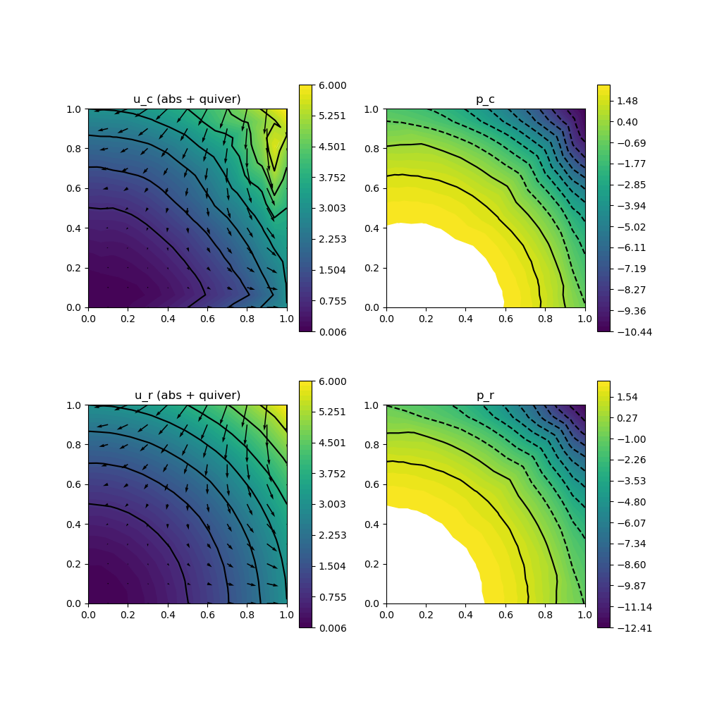

206 : Pressure-robustness 2D
This example studies two benchmarks for pressure-robust discretisations of the stationary Navier-Stokes equations that seek a velocity $\mathbf{u}$ and pressure $\mathbf{p}$ such that
\[\begin{aligned} - \mu \Delta \mathbf{u} + (\mathbf{u} \cdot \nabla) \mathbf{u} + \nabla p & = \mathbf{f}\\ \mathrm{div}(u) & = 0 \end{aligned}\]
with (possibly time-dependent) exterior force $\mathbf{f}$ and some viscosity parameter $\mu$.
Pressure-robustness is concerned with gradient forces that may appear in the right-hand side or the material derivative and should be balanced by the pressure (as divergence-free vector fields are orthogonal on gradient fields). Here, two test problems are considered:
- HydrostaticTestProblem() : Stokes (without convection term) and $\mathbf{f} = \nabla p$ such that $\mathbf{u} = 0$
- PotentialFlowTestProblem() : Navier-Stokes with $\mathbf{f} = 0$ and $\mathbf{u} = \nabla h$ for some harmonic function
In both test problems the errors of non-pressure-robust discretisations scale with $1/\mu$, while the pressure-robust discretisation solves $\mathbf{u} = 0$ exactly in test problem 1 and gives much better results in test problem 2.
module Example206_PressureRobustness2D
using GradientRobustMultiPhysics
using ExtendableGrids
using GridVisualize
# problem data
function HydrostaticTestProblem()
# Stokes problem with f = grad(p)
# u = 0
# p = x^3+y^3 - 1//2
function P1_pressure!(result,x::Array{<:Real,1})
result[1] = x[1]^3 + x[2]^3 - 1//2
end
function P1_rhs!(result,x::Array{<:Real,1})
result[1] = 3*x[1]^2
result[2] = 3*x[2]^2
end
u = DataFunction([0,0]; name = "u")
p = DataFunction(P1_pressure!, [1,2]; name = "p", dependencies = "X", quadorder = 3)
∇u = DataFunction([0,0,0,0]; name = "∇u")
f = DataFunction(P1_rhs!, [2,2]; name = "f", dependencies = "X", quadorder = 2)
return p,u,∇u,f,false
end
function PotentialFlowTestProblem()
# NavierStokes with f = 0
# u = grad(h) with h = x^3 - 3xy^2
# p = - |grad(h)|^2 + 14//5
function P2_pressure!(result,x::Array{<:Real,1})
result[1] = - 1//2 * (9*(x[1]^4 + x[2]^4) + 18*x[1]^2*x[2]^2) + 14//5
end
function P2_velo!(result,x::Array{<:Real,1})
result[1] = 3*x[1]^2 - 3*x[2]^2;
result[2] = -6*x[1]*x[2];
end
function P2_velogradient!(result,x::Array{<:Real,1})
result[1] = 6*x[1]
result[2] = -6*x[2];
result[3] = -6*x[2];
result[4] = -6*x[1];
end
u = DataFunction(P2_velo!, [2,2]; name = "u", dependencies = "X", quadorder = 2)
p = DataFunction(P2_pressure!, [1,2]; name = "p", dependencies = "X", quadorder = 4)
∇u = DataFunction(P2_velogradient!, [4,2]; name = "∇u", dependencies = "X", quadorder = 1)
f = DataFunction([0,0]; name = "f")
return p,u,∇u,f,true
end
function solve(Problem, xgrid, FETypes, viscosity = 1e-2; nlevels = 4, print_results = true, verbosity = 1, target_residual = 1e-10, maxiterations = 20, Plotter = nothing)
# load problem data and set solver parameters
ReconstructionOperator = FETypes[3]
p,u,∇u,f,nonlinear = Problem()
# setup classical (Problem) and pressure-robust scheme (Problem2)
Problem = IncompressibleNavierStokesProblem(2; viscosity = viscosity, nonlinear = false)
add_boundarydata!(Problem, 1, [1,2,3,4], BestapproxDirichletBoundary; data = u)
Problem2 = deepcopy(Problem)
Problem.name = "Stokes problem (classical)"
Problem2.name = "Stokes problem (p-robust)"
# assign right-hand side
add_rhsdata!(Problem, 1, RhsOperator(Identity, [0], f))
add_rhsdata!(Problem2, 1, RhsOperator(ReconstructionOperator, [0], f))
# assign convection term
if nonlinear
add_operator!(Problem,[1,1], ConvectionOperator(1, Identity, 2, 2))
add_operator!(Problem2,[1,1], ConvectionOperator(1, ReconstructionOperator, 2, 2; testfunction_operator = ReconstructionOperator))
end
# define bestapproximation problems
L2VelocityBestapproximationProblem = L2BestapproximationProblem(u; bestapprox_boundary_regions = [1,2,3,4])
L2PressureBestapproximationProblem = L2BestapproximationProblem(p; bestapprox_boundary_regions = [])
H1VelocityBestapproximationProblem = H1BestapproximationProblem(∇u, u; bestapprox_boundary_regions = [1,2,3,4])
# define ItemIntegrators for L2/H1 error computation
L2VelocityErrorEvaluator = L2ErrorIntegrator(Float64, u, Identity)
L2PressureErrorEvaluator = L2ErrorIntegrator(Float64, p, Identity)
H1VelocityErrorEvaluator = L2ErrorIntegrator(Float64, ∇u, Gradient)
Results = zeros(Float64, nlevels, 9)
NDofs = zeros(Int, nlevels)
# loop over refinement levels
Solution = nothing
Solution2 = nothing
for level = 1 : nlevels
# uniform mesh refinement
xgrid = uniform_refine(xgrid)
# get FESpaces
FES = [FESpace{FETypes[1]}(xgrid), FESpace{FETypes[2]}(xgrid; broken = true)]
Solution = FEVector{Float64}(["u_c (classic)", "p_c (classic)"],FES)
Solution2 = FEVector{Float64}(["u_r (p-robust)", "p_r (p-robust)"],FES)
# solve both problems
solve!(Solution, Problem; maxiterations = maxiterations, target_residual = target_residual, anderson_iterations = 5)
solve!(Solution2, Problem2; maxiterations = maxiterations, target_residual = target_residual, anderson_iterations = 5)
# solve bestapproximation problems
L2VelocityBestapproximation = FEVector{Float64}("Πu",FES[1])
L2PressureBestapproximation = FEVector{Float64}("πp",FES[2])
H1VelocityBestapproximation = FEVector{Float64}("Su",FES[1])
solve!(L2VelocityBestapproximation, L2VelocityBestapproximationProblem)
solve!(L2PressureBestapproximation, L2PressureBestapproximationProblem)
solve!(H1VelocityBestapproximation, H1VelocityBestapproximationProblem)
# compute L2 and H1 errors and save data
NDofs[level] = length(Solution.entries)
Results[level,1] = sqrt(evaluate(L2VelocityErrorEvaluator,Solution[1]))
Results[level,2] = sqrt(evaluate(L2VelocityErrorEvaluator,Solution2[1]))
Results[level,3] = sqrt(evaluate(L2VelocityErrorEvaluator,L2VelocityBestapproximation[1]))
Results[level,4] = sqrt(evaluate(L2PressureErrorEvaluator,Solution[2]))
Results[level,5] = sqrt(evaluate(L2PressureErrorEvaluator,Solution2[2]))
Results[level,6] = sqrt(evaluate(L2PressureErrorEvaluator,L2PressureBestapproximation[1]))
Results[level,7] = sqrt(evaluate(H1VelocityErrorEvaluator,Solution[1]))
Results[level,8] = sqrt(evaluate(H1VelocityErrorEvaluator,Solution2[1]))
Results[level,9] = sqrt(evaluate(H1VelocityErrorEvaluator,H1VelocityBestapproximation[1]))
end
# print convergence history
print_convergencehistory(NDofs, Results[:,1:3]; X_to_h = X -> X.^(-1/2), ylabels = ["||u-u_c||", "||u-u_r||", "||u-Πu||"])
print_convergencehistory(NDofs, Results[:,4:6]; X_to_h = X -> X.^(-1/2), ylabels = ["||p-p_c||", "||p-p_r||", "||p-πp||"])
print_convergencehistory(NDofs, Results[:,7:9]; X_to_h = X -> X.^(-1/2), ylabels = ["||∇(u-u_c)||", "||∇(u-u_r)||", "||∇(u-Su)||"])
# plot p-robust solution
p = GridVisualizer(; Plotter = Plotter, layout = (2,2), clear = true, resolution = (1000,1000))
scalarplot!(p[1,1],xgrid,view(nodevalues(Solution[1]; abs = true),1,:), levels = 7)
vectorplot!(p[1,1],xgrid,evaluate(PointEvaluator(Solution[1], Identity)), spacing = 0.1, clear = false, title = "u_c (abs + quiver)")
scalarplot!(p[1,2],xgrid,view(nodevalues(Solution[2]),1,:), levels = 11, title = "p_c")
scalarplot!(p[2,1],xgrid,view(nodevalues(Solution2[1]; abs = true),1,:), levels = 7)
vectorplot!(p[2,1],xgrid,evaluate(PointEvaluator(Solution2[1], Identity)), spacing = 0.1, clear = false, title = "u_r (abs + quiver)")
scalarplot!(p[2,2],xgrid,view(nodevalues(Solution2[2]),1,:), levels = 11, title = "p_r")
# return last L2 error of p-robust method for testing
return Results[end,2]
end
# everything is wrapped in a main function
function main(; problem = 2, verbosity = 0, nlevels = 3, viscosity = 1e-2, Plotter = nothing)
# set log level
set_verbosity(verbosity)
# set problem to solve
if problem == 1
Problem = HydrostaticTestProblem
elseif problem == 2
Problem = PotentialFlowTestProblem
else
@error "No problem defined for this number!"
end
# set grid and problem parameters
xgrid = grid_unitsquare(Triangle2D) # initial grid
# choose finite element discretisation
#FETypes = [H1BR{2}, H1P0{1}, ReconstructionIdentity{HDIVRT0{2}}] # Bernardi--Raugel with RT0 reconstruction
FETypes = [H1BR{2}, H1P0{1}, ReconstructionIdentity{HDIVBDM1{2}}] # Bernardi--Raugel with BDM1 reconstruction
#FETypes = [H1CR{2}, H1P0{1}, ReconstructionIdentity{HDIVRT0{2}}] # Crouzeix--Raviart with RT0 reconstruction
# run
solve(Problem, xgrid, FETypes, viscosity; nlevels = nlevels, Plotter = Plotter)
return nothing
end
# test function that is called by test unit
# tests if hydrostatic problem is solved exactly by pressure-robust methods
function test(; Plotter = nothing)
xgrid = uniform_refine(grid_unitsquare_mixedgeometries())
testspaces = [[H1CR{2}, H1P0{1}, ReconstructionIdentity{HDIVRT0{2}}],
[H1BR{2}, H1P0{1}, ReconstructionIdentity{HDIVRT0{2}}],
[H1BR{2}, H1P0{1}, ReconstructionIdentity{HDIVBDM1{2}}]
]
error = []
for FETypes in testspaces
push!(error, solve(HydrostaticTestProblem, xgrid, FETypes, 1; nlevels = 1, print_results = false))
println("FETypes = $FETypes error = $(error[end])")
end
xgrid = uniform_refine(grid_unitsquare(Triangle2D))
testspaces = [
[H1P2B{2,2}, H1P1{1}, ReconstructionIdentity{HDIVRT1{2}}]
]
error = []
for FETypes in testspaces
push!(error, solve(HydrostaticTestProblem, xgrid, FETypes, 1; nlevels = 1, print_results = false, Plotter = Plotter))
println("FETypes = $FETypes error = $(error[end])")
end
return maximum(error)
end
endThis page was generated using Literate.jl.
Default output:
julia> Example206_PressureRobustness2D.main()
ITERATION | LSRESIDUAL | NLRESIDUAL
--------------------------------------
1 | 1.612948e-16 | 3.907408e+00
2 | 1.469228e-15 | 1.274009e+00
3 | 1.010836e-15 | 1.579942e+00
4 | 1.615966e-15 | 6.859809e-01
5 | 1.433089e-15 | 4.477920e-01
6 | 1.377279e-15 | 3.162627e-01
7 | 1.301056e-15 | 3.153493e-01
8 | 1.541122e-15 | 3.439853e-01
9 | 1.642042e-15 | 2.469638e-01
10 | 1.541013e-15 | 1.880776e-01
11 | 1.535378e-15 | 2.331640e-01
12 | 1.240200e-15 | 1.719761e-01
13 | 1.282140e-15 | 1.236650e-01
14 | 1.528755e-15 | 1.532406e-01
15 | 1.698935e-15 | 6.657050e-02
16 | 1.541068e-15 | 4.815822e-02
17 | 8.861793e-16 | 3.579211e-02
18 | 1.515619e-15 | 1.615671e-02
19 | 1.066903e-15 | 1.255390e-02
20 | 1.547617e-15 | 5.543517e-03
ITERATION | LSRESIDUAL | NLRESIDUAL
--------------------------------------
1 | 1.612948e-16 | 4.356218e+00
2 | 1.172560e-15 | 3.427807e-01
3 | 1.364506e-15 | 2.616497e-01
4 | 1.498416e-15 | 2.423814e-01
5 | 1.472767e-15 | 1.985077e-01
6 | 1.210817e-15 | 1.334100e-01
7 | 1.369305e-15 | 5.475030e-02
8 | 1.267493e-15 | 2.884838e-02
9 | 1.319606e-15 | 4.588907e-03
10 | 1.121757e-15 | 2.626320e-03
11 | 1.344801e-15 | 1.422550e-03
12 | 1.206752e-15 | 7.924977e-04
13 | 1.212329e-15 | 6.584443e-04
14 | 1.433698e-15 | 6.852785e-04
15 | 1.719849e-15 | 2.363456e-04
16 | 1.472076e-15 | 1.426986e-05
17 | 1.252801e-15 | 5.132736e-06
18 | 1.451334e-15 | 1.535328e-06
19 | 1.203815e-15 | 2.103704e-07
20 | 1.898376e-15 | 6.903053e-08
ITERATION | LSRESIDUAL | NLRESIDUAL
--------------------------------------
1 | 1.617930e-16 | 2.498491e+00
2 | 1.158183e-15 | 4.264672e-01
3 | 1.315374e-15 | 1.466834e-01
4 | 1.193721e-15 | 1.233691e-01
5 | 1.382712e-15 | 2.575874e-02
6 | 1.034702e-15 | 1.584287e-02
7 | 1.363124e-15 | 1.023577e-02
8 | 1.303047e-15 | 1.453320e-03
9 | 1.417647e-15 | 5.978589e-04
10 | 1.262643e-15 | 4.218207e-04
11 | 1.183077e-15 | 1.503106e-04
12 | 1.168980e-15 | 4.639181e-05
13 | 1.072877e-15 | 7.099509e-06
14 | 1.247434e-15 | 2.661706e-06
15 | 1.220322e-15 | 9.314383e-07
16 | 1.199224e-15 | 3.788933e-07
17 | 1.314983e-15 | 2.119052e-07
18 | 1.259643e-15 | 4.316282e-08
19 | 1.242931e-15 | 1.071468e-08
20 | 1.278526e-15 | 5.244141e-09
ITERATION | LSRESIDUAL | NLRESIDUAL
--------------------------------------
1 | 1.617930e-16 | 2.776075e+00
2 | 1.316897e-15 | 4.423908e-02
3 | 1.146369e-15 | 3.071828e-02
4 | 1.287652e-15 | 3.349017e-02
5 | 1.260965e-15 | 4.497733e-03
6 | 1.273214e-15 | 1.488965e-03
7 | 1.297656e-15 | 9.470225e-04
8 | 1.201230e-15 | 3.312038e-04
9 | 1.601835e-15 | 5.202048e-05
10 | 1.364825e-15 | 1.296677e-05
11 | 1.142192e-15 | 1.988109e-06
12 | 1.314586e-15 | 5.441005e-07
13 | 1.258220e-15 | 1.996136e-07
14 | 1.161735e-15 | 4.121641e-08
15 | 1.399004e-15 | 9.881627e-09
16 | 1.651054e-15 | 3.023854e-09
17 | 1.175496e-15 | 1.504867e-09
18 | 1.275399e-15 | 4.526099e-10
19 | 1.385695e-15 | 3.113924e-11
ITERATION | LSRESIDUAL | NLRESIDUAL
--------------------------------------
1 | 1.920113e-16 | 1.399826e+00
2 | 1.127805e-15 | 1.018196e-01
3 | 1.253693e-15 | 1.753466e-02
4 | 1.185432e-15 | 3.761296e-03
5 | 1.170607e-15 | 6.421894e-04
6 | 1.168088e-15 | 2.238335e-04
7 | 1.203673e-15 | 1.034672e-04
8 | 1.226758e-15 | 2.554042e-05
9 | 1.314108e-15 | 1.210502e-05
10 | 1.179130e-15 | 2.795871e-06
11 | 1.277447e-15 | 3.545141e-07
12 | 1.216909e-15 | 9.131551e-08
13 | 1.267877e-15 | 2.694435e-08
14 | 1.146581e-15 | 3.825650e-09
15 | 1.174199e-15 | 1.085089e-09
16 | 1.187419e-15 | 3.259653e-10
17 | 1.288880e-15 | 7.760323e-11
ITERATION | LSRESIDUAL | NLRESIDUAL
--------------------------------------
1 | 1.920113e-16 | 1.552312e+00
2 | 1.245373e-15 | 1.953562e-03
3 | 1.444446e-15 | 6.017487e-04
4 | 1.373396e-15 | 2.624481e-04
5 | 1.357055e-15 | 1.586135e-04
6 | 1.306242e-15 | 4.238678e-05
7 | 1.371301e-15 | 1.525526e-05
8 | 1.310769e-15 | 6.411477e-06
9 | 1.399467e-15 | 1.331816e-06
10 | 1.367619e-15 | 1.827395e-07
11 | 1.296194e-15 | 6.848769e-08
12 | 1.393885e-15 | 2.056931e-08
13 | 1.243372e-15 | 6.517358e-09
14 | 1.325120e-15 | 1.560778e-09
15 | 1.232634e-15 | 2.615673e-10
16 | 1.540907e-15 | 5.853307e-11
ndofs | ||u-u_c|| order | ||u-u_r|| order | ||u-Πu|| order |
============|=============================|=============================|=============================|
70 | 1.13125e+00 0.000 | 6.88280e-01 0.000 | 5.40140e-02 0.000 |
250 | 6.40409e-01 0.894 | 1.00924e-01 3.016 | 1.27605e-02 2.267 |
946 | 2.18402e-01 1.617 | 6.15065e-03 4.205 | 3.02624e-03 2.163 |
ndofs | ||p-p_c|| order | ||p-p_r|| order | ||p-πp|| order |
============|=============================|=============================|=============================|
70 | 1.59543e+00 0.000 | 1.31333e+00 0.000 | 1.15315e+00 0.000 |
250 | 1.03859e+00 0.674 | 5.91329e-01 1.254 | 5.79567e-01 1.081 |
946 | 4.47697e-01 1.265 | 2.90098e-01 1.070 | 2.90014e-01 1.041 |
ndofs | ||∇(u-u_c)|| order | ||∇(u-u_r)|| order | ||∇(u-Su)|| order |
============|=============================|=============================|=============================|
70 | 1.76102e+01 0.000 | 9.63537e+00 0.000 | 1.13867e+00 0.000 |
250 | 1.46160e+01 0.293 | 1.95442e+00 2.507 | 5.66582e-01 1.097 |
946 | 8.87338e+00 0.750 | 3.87639e-01 2.431 | 2.81678e-01 1.050 |